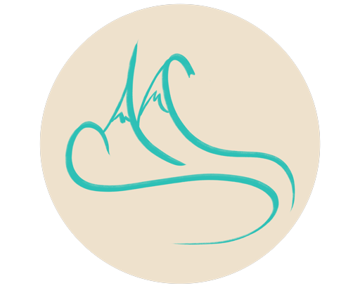

Pre-dive checklist
High-contrast operational rhythm with explicit tasks and readiness states.

Sequoia Marine SolutionsMATE ROV teamSMS logo palette
A darker, utilitarian manual for the competition team: system states, checklists, roles, and launch discipline.
Manual-style display for mission state, roles, and public documentation.
High-contrast operational rhythm with explicit tasks and readiness states.
Works well for robot diagrams, wiring photos, and subsystem ownership.
Our parent organization stays visible without making SMS look like AVI.